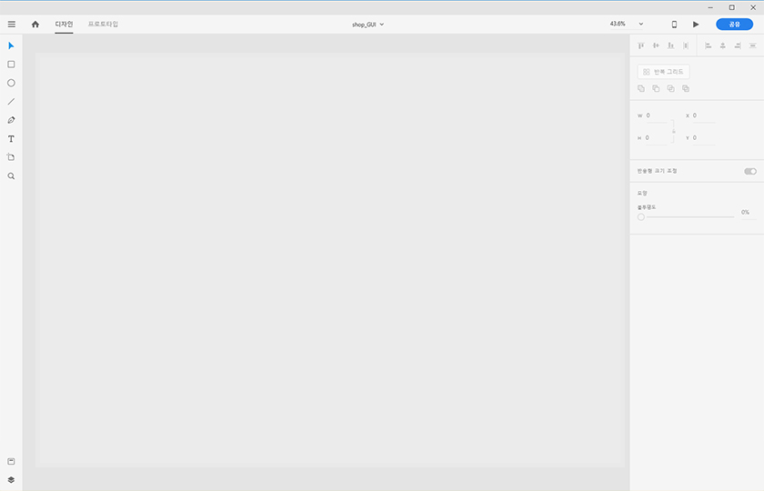
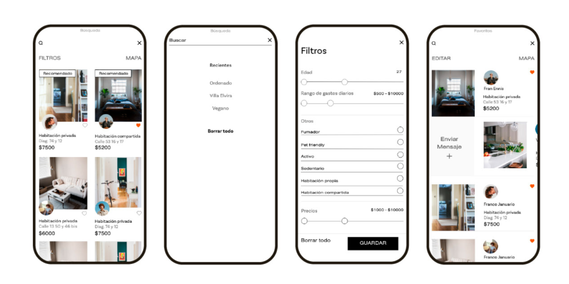
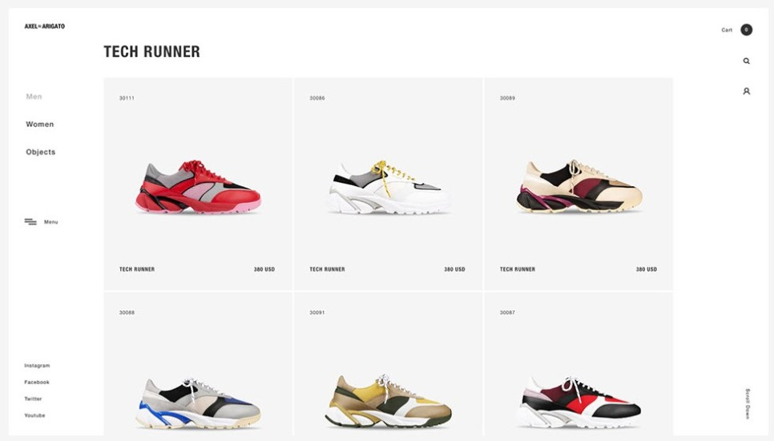

Menu
Adobe app
MENU
Close Menu
Photoshop
Lightroom
Lightroom Classic
Fresco
Illustrator
Dimension
XD
Dreamweaver
InDesign
Premiere Pro
Premiere Rush
After Effects
Animate
Audition
Character Animator
Prelude
Media Encoder
Adobe app 설명서
XD
사용
Adobe XD는 웹 사이트 및 모바일 앱을 사용자 경험에 맞춰 최적화하며 완성하는 디자인 앱
백터 디자인
기능
디자인
프로토 타이핑
다른 어도비 앱(Ps, Ai 등)들과 상호작용 등
튜토리얼
*사용화면

XD를 이용한 예시
 
출처:
www.behance.net
,
www.behance.net
,
www.behance.net
관련 유튜버(강좌)
Madia Designer
디자인베이스
툴 브레이커Tool breaker
관련 직업 및 사용처 예시
일러스트레이터
UI/UX 디자이너
시스템 최소 요구사양(권장사양)
윈도우
시스템
최소요구사항
프로세서(CPU)
Intel® 또는 AMD 프로세서 (64비트 지원)
운영 체제
Windows 10 Fall Creators Update(64비트) – 버전 1709(빌드 10.0.16299) 이상 Windows OS
램
4GB RAM
디스플레이
1280 x 800
GPU(그래픽)
최소 Direct 3D DDI 기능 세트: 10 Intel GPU의 경우 2014년 또는 그 이후에 출시된 드라이버가 필요합니다.
해당 정보를 살펴보려면 실행 메뉴에서 “dxdiag”를 실행하고 “디스플레이” 탭을 선택하십시오
펜 및 터치 입력
Windows 10의 XD는 Windows에서 제공하는 펜 및 터치 기능을 지원합니다.
터치 입력을 사용하여 XD 툴과의 인터랙션을 통해 캔버스에서 아트워크를 제작하고, 레이어를 통해 이동하고,
구성 요소와 인터랙션하고, 프로토타입을 연결하고, 속성 관리자에서 모양 속성을 바꾸고, 미리보기 창을 통해 스크롤하고,
이미지를 캔버스로 드래그하고, 반복 그리드를 제작하는 등 다양한 작업을 수행할 수 있습니다.
인터넷
소프트웨어를 활성화하거나 구독 상태를 확인하고 온라인 서비스를 이용하려면 인터넷 연결 및 등록이 필요합니다.
음성 기능을 통해 프로토타입을 미리 보려면 사용자가 인터넷에 연결되어 있어야 합니다.
맥os
시스템
최소요구사항
프로세서(CPU)
Intel® 또는 AMD 프로세서 (64비트 지원)
운영 체제
macOS X v10.13 이상
램
4GB RAM
디스플레이
레티나 디스플레이 (레티나 권장)
인터넷
소프트웨어를 활성화하거나 구독 상태를 확인하고 온라인 서비스를 이용하려면 인터넷 연결 및 등록이 필요합니다.
음성 기능을 통해 프로토타입을 미리 보려면 사용자가 인터넷에 연결되어 있어야 합니다.
모바일
iOS용 Adobe XD
Android용 Adobe XD
64비트 디바이스:
64비트 iPhone 및 iPad
테스트 기기:
Samsung Galaxy S10, S9
Google Pixel 4, 2
OnePlus 7T
Huawei Nexus 6P
Redmi 7
Apple iOS 12.0 이상, iPadOS
Android 7.0 이상
* 더 자세한 정보
한국어 원본
/
영어 원본
출처-
www.adobe.com